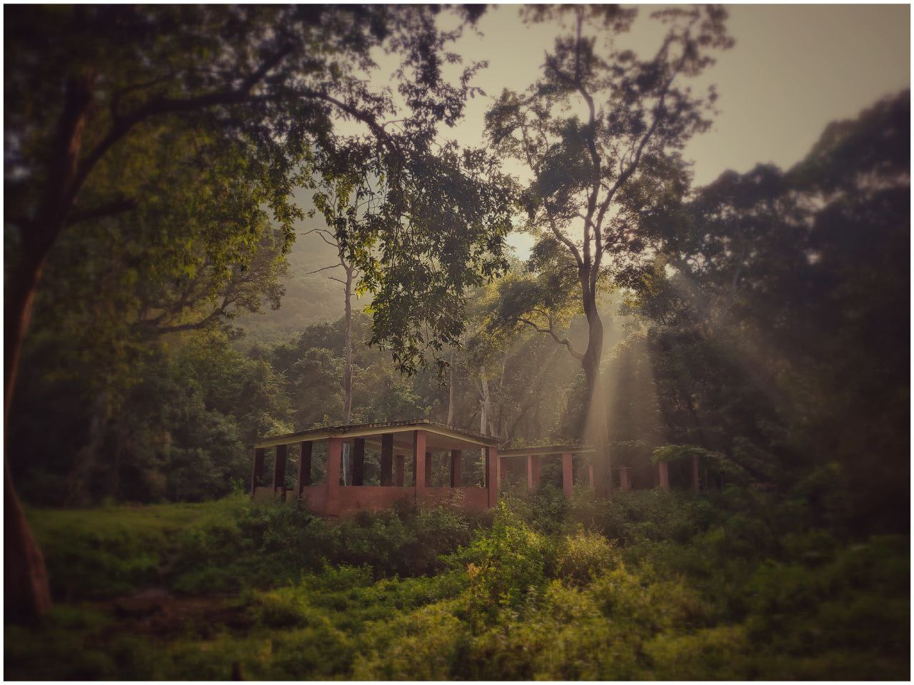

Catharsis
On HOW we can learn to rebel
Riya was calm enough to listen to so many things from Fred. Of course, it’s just as she predicted - dense, and so generic that it drains the energy. Thinking burns calories. She was doubtful if he’s aware of what’s happening.
“You need to be careful with an attempt of this scale” Riya sounded alarmed.
Fred looked for relief. “Of course. But guess what, a couple of my friends already found out even with little to no hints. That in itself surprised me… And the fact that they were ready to put in the effort — to believe on someone — the trust that I am not wasting their time, the trust that I had something to say, the trust that I wasn’t playing them, that’s already everything I could have hoped for” Fred was happy about the outcome which was already encouraging him.
Riya was just listening to him go on about his so-called experiment. Although she was hesitant to accept, she was quite sure of one thing - that he tried doing something that meant so much to him. And fortunately, that resonated with what he said - Pursuing meaning in what we do.
“I used to write my snippets through an application.” He started with his explanation. “And I’ve always been interested in Steganography. A way to secretly hide information in images. (Of course, my paper presentation in college was a failure). So I wanted to attempt something along those lines. I was thinking for a few days, and by the end of the day when I came up with this idea, I wanted to try it on my mobile. Because it was the first Sunday, and I thought I could pick it up as a cycle.
“And how did you manage to capture the cycles? Please don’t give me mathematical equations” Riya was worried if that will bore her.
“It had numbers, yes, and most people already found out that I was counting down the weeks of the years. But why did I do that?” He asked her as if she was supposed to know the answer to his questions.
She gestured as if she had no idea about it.
“There’s a reason why cycles exist. There’s a reason why our cultures used to have rituals and festivals. me of all people, a psychology fanatic, should be careful about utilizing the potential the cycles of life hold within itself.
But why did I not do that?
Why didn’t people of my age do that? What’s wrong with us? Is this what’s supposed to be adulthood? Or is this what we supposed adulthood should be? I was annoyed. Frustrated. And then I was thinking I should do something about this.
“I wanted people to be reminded of the fact that time does not wait for anyone. More so to myself than others. So I thought I could number my posts. I started it in the reverse so people would be reminded that time is fleeting. I was aware of the fact, that people would easily lose interest in what I was doing if I don’t keep them engaged. So I planned out an article for the same”.
“But the problem, Fred is, that you didn’t complete the article as early as you should have”
“I’m agreeing to that point. But unfortunately, we had to travel some interior regions that made the whole journey longer than it usually should have been”
“And you think people should get from this - What? And also help us understand why it is the way it is.” Riya was annoyed at the irritating record keeping works of the churches!.
“Unfortunately, it is not as easy as we think life is. I wanted people to realize this — by letting them know that another week has passed. The clock is ticking. You typically have a resolution at the start of every year (a typical practice that people often fall through by the end of a few months if not weeks. There’s plenty of reasons for that. Of course, life gets in the way. So then, by now, I have already covered a few.
• I want people to realize that a week has passed, and that time is ticking.
• I want them to realize that time does not expand, but rather shrink
• I want them to realize, life is comprised of lots of cycles. And we must be aware of the cycles so that we get the best out of it.
• I want people to realize that no matter what you plan on doing, life always gets in the way. (I’m pretty sure that some of my friends started planning out their targets based on this clock-ish post of mine. ‘I should get a job before he reaches 1’. I know, because, I’ve had multiple goals too)
Riya was now aware of the cold breeze wooshing past her. But Fred continued, for he thinks it deserved the explanation.
“I took up the biggest task of my life till date — An year-long perusal of a project. I didn’t tell people or anyone what I was doing. I wanted to challenge myself. How long can I go in pursuing a thing? My parents don’t know. My brother doesn’t know it. My closest friends didn’t know it. It’s not like they didn’t try to ask. They did. From the very first day. And guess what. I refused. I refused to tell them. It was a task to myself. It was the present me against the ‘me’ that I wanted myself to be.
There were so many things I wanted to portray from within this. Whether people get all of them isn’t the question. It’s whether you’re aware of it.
Some of them are -
- A picture speaks a thousand words. No matter how hard you try to “say” things, people are enchanted by images. And that’s the reason I went with an image.
- Started as white on black. But proceeded to be black on white. And that was because I’m a fan of Taoism. As a philosophy. It’s the strongest I could relate to, and the posts were a trope to the core of Taoism - The yin and Yang. The tao. There’s a white in every black and black in every white. At least to some extent. It depends on what we focus, we see.
- How does that convey something? The clock’s ticking, yes. But what does it signify? A lot. The week’s drying down.
- It doesn’t matter what tool we use to do something, as long as we are aware of the tradeoffs of the tool in question. I was posting them on Instagram. That was the tool or rather the medium via which I was able to spread this. But what was the tradeoff of the tool? Why post them on Instagram? Do you remember that there used to be an “Activity” tab on Instagram? It’s easy to see what your friends are “double-tapping” on. It was quite a way of spying on them. I work in the domain of AI. I know the potential use cases of that. “People judge because they’re too lazy to think,” said one of my favourite people. And that’s how evolution works too. Your subconscious is far too powerful to comprehend. Just by looking at what they “double-tapped”, your mind automatically starts creating an image of them. Many of my friends follow celebrities accounts on it, and they are not aware of how it is eating their time. But what does this have to do with my posts? Because I was noticing the people who were active on Instagram when I am making those posts. They sure like other posts, but not this one. Now, here is a chance for you to make a judgement on me - That I judge people based on what they like and if they like mine. No. Not really. And that’s an example of how our mind works. Despite them not “liking” my posts, most of them messaged me personally and asked what it was about. So despite them not knowing what it is that I’m doing, they are noticing it. And that’s the key. That’s one of the points of the experiment. People notice. No matter their choice, they always notice. Sometimes the things you do, you wonder if people noticed. Sometimes you get discouraged. Sometimes you go to the extreme of not doing it because it doesn’t seem like people noticed it. But trust me, they noticed. That’s the thing - You can’t do evil things and think people didn’t notice it. And the same goes for a good thing. It could be the tiniest of things, but it gets noticed. Every tiny thing that you do, gets noticed. No matter if it’s good or bad. (And that’s the start of what one of my posts talked about - The butterfly effect) Everything that you do matter - No matter how small or big, how evil or good, how mundane or unusual. It manifests in ways you can’t imagine.
- And every post of mine gets cross-posted onto FB. Why? I’m a web developer. I was just browsing FB the other day, and an image didn’t load. Of course, I did what every other web developer would do. I saw the “alt” text on the image. And I was shocked. It automatically captioned what was in the image. A paraphrasing if you will. Something along the lines of “Could contain six people including [x], [y], [z] wearing goggles and smiling”. None of that was supposedly human encoded. You can read about it even today. Remember the facebook settings where it asks you if you should let FB recognize your face in other people’s photos? This is one use case of that. So whatever I post, or other posts about me/including me is going to be analyzed by machines. What if, just what if, I steganophized my images? Is FB’s algorithm for image identification and captioning well designed to identify that? Of course not. And that’s why I cross-post them. I initially wanted to post this on FB, but FB doesn’t have an option to cross-post to Insta (At least at the time of me starting this experiment) So it was the other way around. At the end of the day, we’re developers, we always miss some kind of edge case. This was an edge case for their image recognition system behind the scenes.
- So now, what’s the actual “image” that I’m posting? I’ve been writing snippet. That’s all I’m using Instagram for.
- Cycles are important, yes. But simply following cycles never brought us where we are today - Evolution works because of that rebellious nature outside the norm. The world around is not bettered by simply following cycles, and respecting them - But by being courageous enough to break them apart when you have a sane reason to. And that’s why I’m breaking the cycle. A symbolic mutation for a new start. (That being the day of my birth, just saying)
- People thought I made a mistake when I posted my “1” image on 30th December 2019, which was not a Sunday. But that’s the thing - People are quick to judge, and that includes me too. But that’s the symbolic representation of a mutation. A rebirth of something new. What better way could you symbolize that than by posting it on my birthday?
- Life is a bundle of nuances. Just like how there are many layers to this experiment of mine, there are experiments in life that we are not aware of. Imagine that we’re part of an experiment that someone else is playing.
- Truth being, throughout a year, I forgot a couple of other layers I wanted to convey. I may not be consciously aware of it, but my subconscious is - in fact, that’s what designed this. It shapes me“
Fred was quite impressed with what he did. Riya was confused of course. But she had her moments of thoughts. Thoughts that helped her drift to sleep. He drove to a place he chose for their stay.
As the day ended and started another, the chirps of the birds woke him up. Ferdinand woke her up and took her out of the cottage they were staying.
